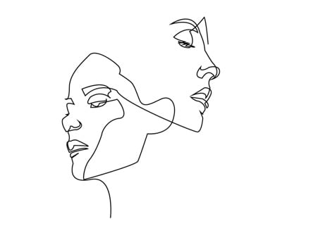

Início
Esboços
LineArt
Pintura
Início
Esboços
LineArt
Pintura
Line art, que em tradução livre significa "arte de linha", é um estilo de desenho onde o desenhista faz sua arte utilizando apenas traços, sem cores, podendo eles serem digitais ou a mão livre. Como nos exemplos abaixo.
Linhas reais: linhas reais que existem fisicamente. Linhas implícitas: linhas que você vê na sua mente, que preenchem espaços entre objetos. Por exemplo, você pode ver uma linha implícita nos espaços entre luzes em um teto ou até mesmo no olhar entre duas pessoas. Linhas geométricas: linhas definidas matematicamente, com regularidade e extremidades precisas. Linhas orgânicas: linhas irregulares, curvas ou fluidas. Embora as linhas geométricas raramente sejam encontradas na natureza, as linhas orgânicas são comuns na natureza.
A Line Art remonta a quase 75.000 anos. Na verdade, o primeiro desenho conhecido feito por um humano foi encontrado em uma rocha pequenina na África do Sul e é estimado que tenha 73.000 anos. O desenho na rocha, feito com ocre vermelho (um tipo de argila marrom avermelhada), consiste em várias linhas de intersecção.
Com o tempo, a Line Art tem evoluído significativamente desse exemplo mais primitivo. Alguns dos artistas mais famosos, incluindo Pablo Picasso e Leonardo da Vinci, criaram uma poderosa Line Art. As obras são muitas vezes vistas como “estudos” ou precursoras das obras-primas pintadas que eles criaram eventualmente. Por exemplo, o Museu Picasso em Barcelona, na Espanha, abriga uma série de obras iniciais do artista espanhol e rascunhos inspiradores, que ajudaram a mapear suas peças maiores e posteriores. No entanto, esses desenhos de Line Art também se tornam obras-primas valorizadas. Ilustradores de moda do passado e de hoje usam da Line Art de uma forma semelhante — para colocar o que está no cérebro no papel antes de dar vida com os tecidos. Assista um episódio de Project Runway, ou navegue pela conta do seu designer favorito no Instagram, e você verá as interpretações de Line Art dos próprios designers. Outros artistas não veem a Line Art como um meio para um fim, mas sim como sua forma primária de expressão. O artista pop americano Keith Haring, que atingiu o auge de sua fama enquanto vivia em Nova York na década de 80, é um dos artistas de linhas mais notável e celebrado do mundo. Ele se tornou famoso por sua Line Art esplêndida, criada com giz, que se estendia em metrôs de Nova York e em outros espaços públicos.
